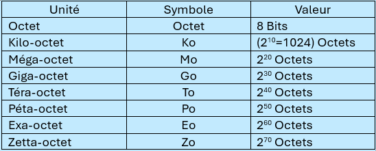
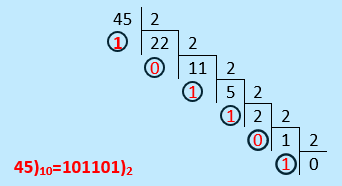
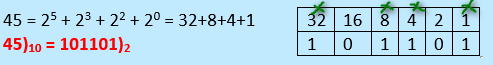
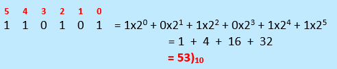
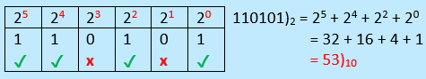
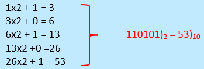

II- Représentation de l'information dans un système informatique
1. Codage de l’information
■ C’est quoi un code binaire ?
■ Pourquoi coder de l'information
■ Comment représenter les informations pour les mettre dans l'ordinateur
Les ordinateurs sont des machines électroniques qui reconnaissent seulement deux états :
• 0 = absence de courant (OFF)
• 1 = présence de courant (ON)
Ces deux états correspondent aux bits (Binary digits).
- Avec 1 bit on peut coder 2 informations (0 et 1)
- Avec 2 bits on peut coder 4 informations (00,01,10 et 11)
- Avec n bits on peut coder 2n informations
Coder l'information, c'est la transformer en une forme compréhensible par un ordinateur.
Toutes les informations (texte, image, son, vidéo…) doivent donc être codées en binaire pour être traitées.
L’information traitée par un système informatique ne peut donc être qu’une suite de ‘0’ et de ‘1’, dite information binaire
2. Les unités de mesures

3. Les systèmes de numération
• Système binaire (b = 2) : C’est le système utilisé par la machine, comporte deux bits : 0 et 1.
• Système décimal (b = 10) : C’est le système que nous utilisons quotidiennement, comporte 10 chiffres : 0,1,……et 9
4. Conversion en binaire
a- Méthode de division consécutive par 2:
C'est la méthode la plus courante.
• Étapes: Divisez le nombre décimal par 2 et notez le reste (0 ou 1). Continuez à diviser le quotient par 2 et à noter les restes jusqu'à ce que le quotient devienne 0.
• Résultat: Les restes, lus de bas en haut, forment le nombre binaire.
Exemple : 45)10 = …….)2

b- Méthode des puissances de 2:
• Étapes: Repérer les puissances de 2 qui composent le nombre, puis écrire 1 pour les puissances utilisées, 0 pour les autres.
• Résultat: Combiner les 1 et 0 dans l'ordre des puissances décroissantes pour former le nombre binaire.
Exemple : 45)10 = …….)2

5. Conversion en décimal
a- Méthode par Addition des Puissances:
• Étapes: Chaque chiffre binaire (bit) est multiplié par une puissance de 2 selon sa position (en partant de la droite (poids faible 20) vers la gauche (poids fort)).
• Résultat: Faire la somme des résultats.
Exemple : 110101)2 = …….)10

b- Méthode par Table de Conversion:
• Étapes: listez les puissances de 2 de droite à gauche en commençant par 20. Écrivez le nombre binaire sous les puissances de sorte que chaque chiffre binaire corresponde à sa puissance de 2
• Résultat: additionner les puissances correspondant aux chiffres 1.
Exemple : 110101)2 = …….)10

c- Méthode par Addition Progressive
• Étapes: On parcourt les bits de gauche à droite et on multiplie le premier bit (le plus à gauche) par 2 puis on ajoute le bit suivant, on répète l’opération jusqu’au dernier bit.
Exemple : 110101)2 = …….)10
